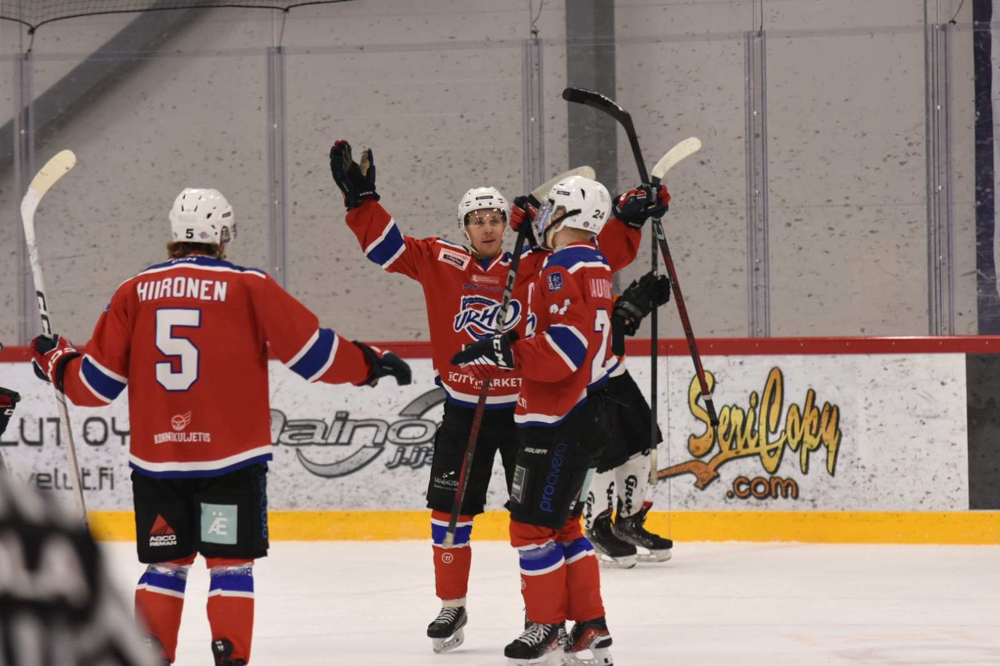

Kosken Kiekko
Jatkuvaa taistelua jäällä!

Tervetuloa Kosken Kiekon kotisivuille!
Kosken Kiekko on Äänekoskelainen II-divisioonan jääkiekkojoukkue, joka edustaa intohimoa, tiimityötä ja paikallista urheilukulttuuria.
Tutustu joukkueeseenJoukkueen uutiset
Viimeisimmän ottelun raportti
1.4.2025: Joukkue pelasi viimeisimmän pelinsä Gladiators HT:tä vastaan voittaen tiukan kamppailun lukemin 2-1.
Pelin MVP: Matti Myöhänen (24) tehopistein 2+0.
Loukkaantuminen: Joel Jokinen (8) loukkaantui pelissä vastustajan taklattua hänet voimakkaasti. Jokinen ei saanut vakavia vammoja, mutta alustavasti hän ei osallistu seuraavaan peliin.